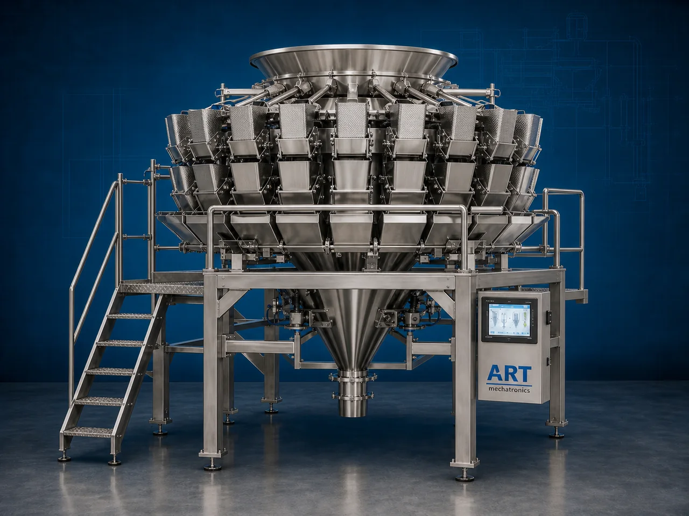

Multi Head Weigher Packing Machine (Automatic Precision Weighing & Packaging System)
A Multi Head Weigher Packing Machine, also known as a Multihead Weighing System, Combination Weigher Machine, or Automatic Multihead Packing Machine, is an advanced industrial weighing and packaging solution designed for high-speed, ultra-accurate weighing, dosing, portioning, feeding, and automatic packaging of snacks, namkeen, dry fruits, granules, frozen foods, candies, pan masala, and other products.

About the Multi Head Weigher
Multi head weigher systems are widely used for:
- High-speed automatic weighing
- Precision product dosing
- Automatic pouch filling
- Snack and FMCG packaging
- Packaging line automation
- Continuous production operations
The machine improves:
- Weighing accuracy
- Packaging speed
- Product consistency
- Production efficiency
- Labor reduction
- Packaging automation capability
Industrial multihead weighers use:
- Multiple weighing buckets
- Combination weighing algorithms
- High-speed sensors
- Servo and PLC automation systems
- Intelligent product distribution technology
to achieve ultra-fast and highly accurate product weighing and filling operations.
Multi head weigher packing machines are widely used in industries such as:
Snack & namkeen industries
Pan masala & mouth freshener industries
Dry fruit industries
Frozen food industries
Food processing industries
Confectionery industries
FMCG industries
Pharmaceutical industries
where high-speed precision weighing and automatic packaging are essential.
The machine is highly suitable for:
- Namkeen packing
- Chips packaging
- Dry fruit weighing
- Candy packing
- Pan masala filling
- Frozen food packaging
ART Mechatronics offers high-performance multi head weigher packing machines, engineered for high-speed industrial operation, precision weighing accuracy, packaging automation, and reliable long-term performance.
Working Principle of Multi Head Weigher Packing Machine
Products are fed into top distribution cone through:
- Z type elevator
- Bucket elevator
- Vibratory feeder
- Conveyor feeding systems
Vibratory feeders distribute products evenly into multiple weighing buckets
Intelligent combination weighing technology calculates best weight combination automatically.
Machine handles:
- Namkeen
- Chips
- Dry fruits
- Candy
- Frozen foods
- Pan masala
- Granules with high-speed weighing accuracy.
Selected weighing buckets discharge product automatically into: VFFS machine HFFS machine Containers Trays Packaging systems
System controls: Weighing accuracy Product flow Bucket timing Packaging synchronization Production speed
Multihead weigher integrates with complete packaging line for uninterrupted production operation
Types of Multi Head Weigher Packing Machines
- 1. Standard Multi Head Weigher
Designed for: ✔ Snacks and FMCG packaging applications
- 2. High-Speed Multihead Weigher
Suitable for: ✔ Ultra high-speed industrial packaging systems
- 3. Food Grade Multihead Weigher
Uses: ✔ Hygienic stainless steel construction for food and pharmaceutical industries.
- 4. Frozen Food Multi Head Weigher
Designed for: ✔ Frozen and sticky product weighing systems
- 5. Dry Fruit & Granule Multihead Weigher
Suitable for: ✔ Precision dry product weighing applications
- 6. Fully Automatic Multi Head Packaging System
Designed for: ✔ Complete integrated weighing and packaging automation lines
Industries Using Multi Head Weigher Packing Machines
🍟 Snack & Namkeen Industry Chips, namkeen, and snack packaging systems 🌿 Pan Masala & Mouth Freshener Industry Pan masala, supari, and mouth freshener weighing systems 🥜 Dry Fruit Industry Almond, cashew, raisin, and nut packaging systems 🍃 Food Processing Industry Granule, frozen food, and ready-to-eat product packaging systems 🍬 Confectionery Industry Candy, chocolate, and sweet packaging systems 🛒 FMCG Industry Consumer product weighing and packaging systems 💊 Pharmaceutical Industry Tablet and granule weighing systems 🧊 Frozen Food Industry Frozen snack and food packaging systems
Features & Advantages
- Ultra high-speed precision weighing system
- Accurate automatic product dosing operation
- Continuous industrial packaging capability
- Intelligent combination weighing technology
- PLC and servo automation control systems
- Reduces product giveaway and wastage
- Supports multiple product types and packaging formats
- Hygienic food-grade stainless steel construction
- Reliable long-term industrial performance
Technical Highlights
Weigher Type: 10 head weigher 14 head weigher 20 head weigher Combination weigher system Construction: Stainless Steel (SS304 / SS316) Product Handling: Snacks Dry fruits Granules Frozen foods Pan masala Features: PLC control system Touchscreen HMI Servo synchronization High-speed load cells Automatic product distribution Integration: VFFS machines HFFS machines Packaging conveyors Automation: Fully automatic high-speed systems
Turnkey Multi Head Weigher Packaging Solutions
ART Mechatronics offers: Complete multi head weigher packaging systems Precision weighing and dosing solutions Packaging automation integration systems High-speed packaging line synchronization Installation & commissioning After-sales service & AMC
Why Choose Art Mechatronics
Expertise in industrial packaging and automation systems Customized multihead weighing solutions for multiple industries High-performance and durable weighing technology Advanced PLC and servo automation systems Proven industrial packaging performance across sectors
Applications
Snack Manufacturing Plants Pan Masala Manufacturing Units Food Processing Industries Dry Fruit Packaging Facilities FMCG Packaging Plants Frozen Food Industries
Get pricing & specs for the Multi Head Weigher
Share the product, target capacity, current process and plant location. These details help our engineers discuss the right machine or line configuration.
One partner, from design to start-up
ART Mechatronics designs, manufactures, installs and commissions your Multi Head Weigher solution with regional presence in India, UAE and Thailand.